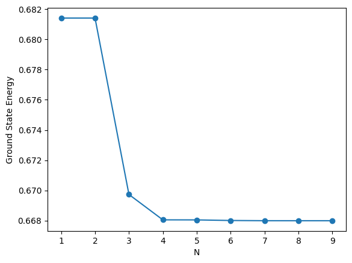

import sympy as sp
x = sp.symbols('x', real=True)
m, hbar, alpha, beta = sp.symbols('m hbar alpha beta', real=True, positive=True)
def S_ij(psi_i, psi_j):
return sp.integrate(psi_i * psi_j, (x, -sp.oo, sp.oo))
def T_ij(psi_i, psi_j):
return hbar**2/(2*m) * sp.integrate(sp.diff(psi_i, x) * sp.diff(psi_j, x), (x, -sp.oo, sp.oo))
def V_ij(psi_i, psi_j, V):
return sp.integrate(psi_i * V * psi_j, (x, -sp.oo, sp.oo))
def H_ij(psi_i, psi_j, V):
return T_ij(psi_i, psi_j) + V_ij(psi_i, psi_j, V)
psi = sp.exp(-beta * x**2)
norm = sp.sqrt(S_ij(psi, psi))
psi = psi / norm
E = H_ij(psi, psi, alpha * x**4)
beta_opt = sp.solve(E.diff(beta), beta)[0]
beta_opt
\[\displaystyle \frac{\sqrt[3]{6} \sqrt[3]{\alpha} \sqrt[3]{m}}{2 \hbar^{\frac{2}{3}}}\]
import numpy as np
from scipy.linalg import eigh
def variational(N, subs_dict):
basis = [sp.exp(-beta_opt * x**2)*x**(2*n) for n in range(N)]
S = sp.Matrix([[S_ij(psi_i, psi_j) for psi_j in basis] for psi_i in basis])
H = sp.Matrix([[H_ij(psi_i, psi_j, alpha * x**4) for psi_j in basis] for psi_i in basis])
H = H.subs(subs_dict)
S = S.subs(subs_dict)
H = np.array(H.evalf(), dtype=float)
S = np.array(S.evalf(), dtype=float)
eigvals, eigvecs = eigh(H, S)
return eigvals
E_ground = []
for i in range(1,10):
energies = variational(i,{alpha: 1, beta: 1, m: 1, hbar: 1})
E_ground.append(energies[0])
import matplotlib.pyplot as plt
plt.plot(range(1,10), E_ground, marker='o')
plt.xlabel('N')
plt.ylabel('Ground State Energy')
plt.show()
